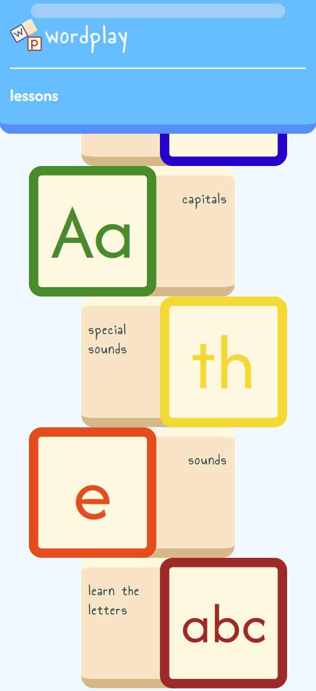
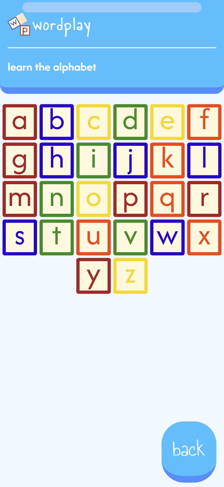
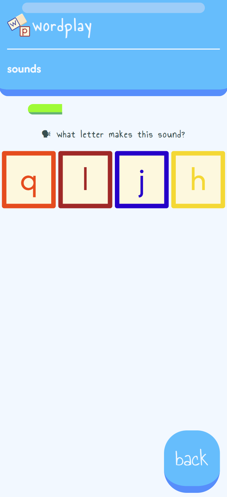
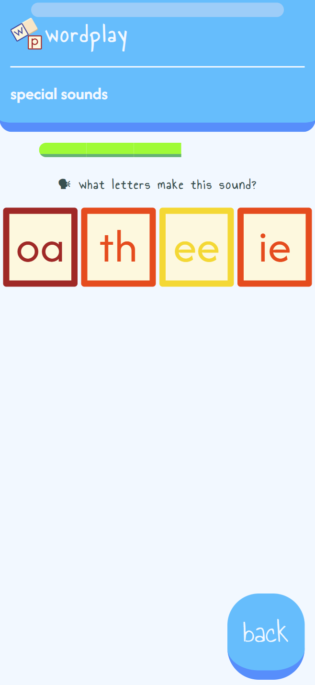
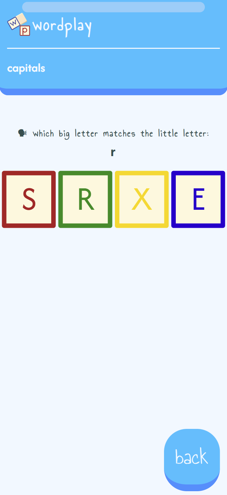
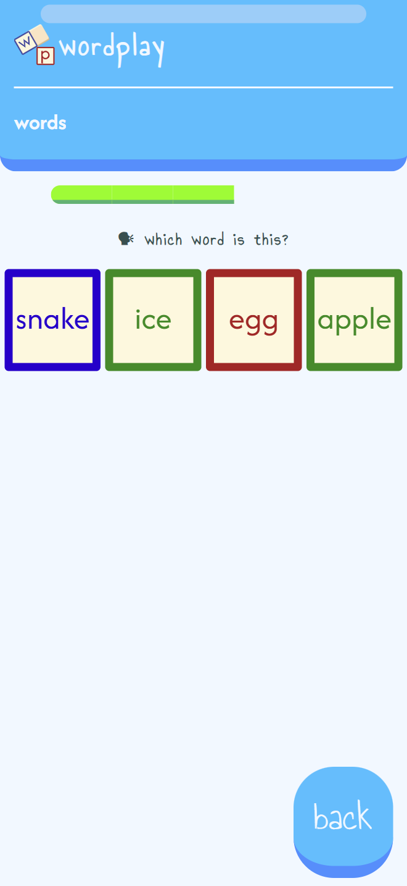

WordPlay is an exploration of how learning to read can be assisted digitally. Making learning interesting & engaging for young children is becoming increasingly difficult each day. Inspired by language learning giants like Duolingo, WordPlay uses a familiar structure with bold colours.
The website follows a linear path, allowing children to familiarise themselves with simpler sounds first. If they can pass an exercise, they can choose to move onto the next section, or go back to continue practicing.





